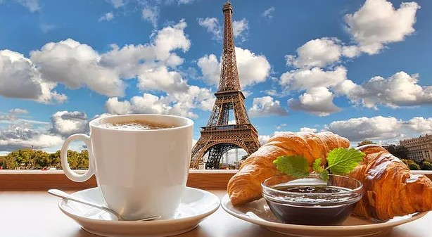
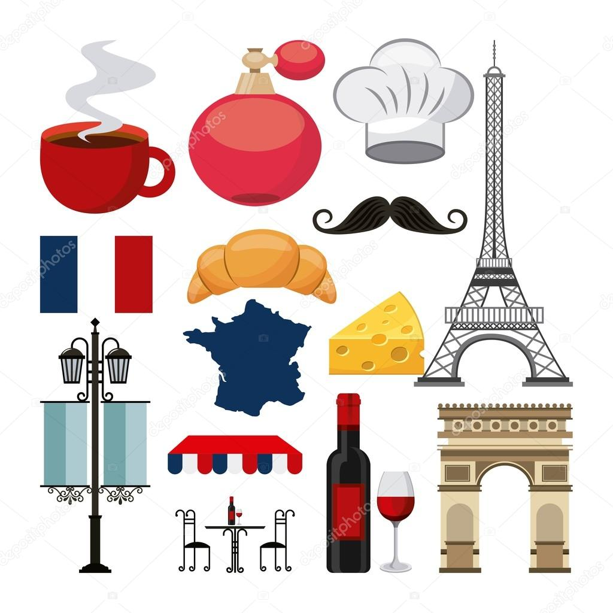
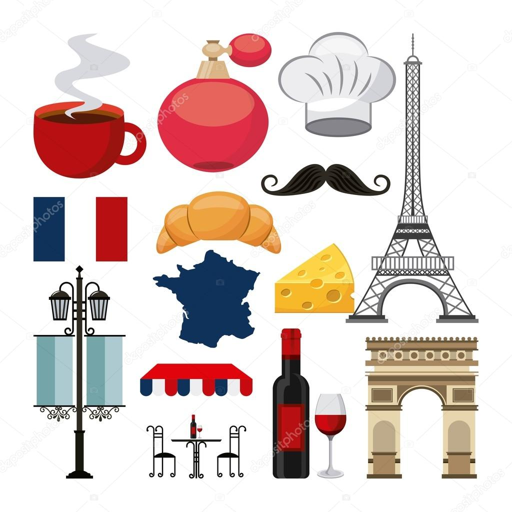

Francia y su increible cultura

Francia es un país transcontinental, miembro de la Unión Europea, cuya forma de gobierno es la república semipresidencialista. Territorialmente comprende la Francia metropolitana y la Francia de ultramar, siendo a su vez el país más grande de la Unión Europea. Su territorio, que incluye regiones de ultramar o Territorios dependientes, se extiende sobre una superficie total de 675 417 km². En 2017 el país contaba con 67,1 millones de habitantes (65 millones en los departamentos metropolitanos y 2,1 millones en los departamentos de ultramar)

Politica
Francia es una república semipresidencialista con un jefe del Gobierno —el primer ministro— designado por el presidente, que es el jefe del Estado elegido por sufragio directo. Territorialmente, Francia consta de 18 regiones administrativas: 13 metropolitanas (es decir, la Francia europea) y 5 regiones de ultramar. Las 5 regiones de ultramar, así como San Martín (territorio francés en el Caribe) se consideran parte de la UE (con estatuto de región ultraperiférica). Estrasburgo, ciudad francesa, es una de las tres sedes oficiales de las instituciones europeas. Las otras son Bruselas y Luxemburgo.
Francia es una república semipresidencialista con un jefe del Gobierno —el primer ministro— designado por el presidente, que es el jefe del Estado elegido por sufragio directo. Territorialmente, Francia consta de 18 regiones administrativas: 13 metropolitanas (es decir, la Francia europea) y 5 regiones de ultramar. Las 5 regiones de ultramar, así como San Martín (territorio francés en el Caribe) se consideran parte de la UE (con estatuto de región ultraperiférica). Estrasburgo, ciudad francesa, es una de las tres sedes oficiales de las instituciones europeas. Las otras son Bruselas y Luxemburgo.
Economia
En 2018, los sectores más importantes de la economía francesa fueron la administración pública, la defensa, la educación, la sanidad y los servicios sociales (22,4%), el comercio mayorista y minorista, el transporte, la hostelería y la restauración (17,8%), las actividades profesionales, científicas y técnicas, y las actividades administrativas y de servicios auxiliares (14,0%).
En 2018, los sectores más importantes de la economía francesa fueron la administración pública, la defensa, la educación, la sanidad y los servicios sociales (22,4%), el comercio mayorista y minorista, el transporte, la hostelería y la restauración (17,8%), las actividades profesionales, científicas y técnicas, y las actividades administrativas y de servicios auxiliares (14,0%).
La gastronomía de Francia está caracterizada por su variedad, fruto de la diversidad regional francesa, tanto cultural como de materias primas, pero también por su refinamiento. Su influencia se deja sentir en casi todas las cocinas del mundo occidental, que han ido incorporando a sus bases conocimientos técnicos de la cocina francesa. Varios chefs franceses tienen una gran reputación internacional, como es el caso de Taillevent, La Varenne, Carême, Escoffier, Ducasse o Bocuse. Es una de las cuatro gastronomías incluida en la lista del Patrimonio Cultural Inmaterial de la Humanidad, desde el 16 de noviembre de 2010.
La cultura de Francia se caracteriza por su historia y por su diversidad. Su influencia ha forjado muchas expresiones tanto culturales como políticas en Europa y en el mundo entero. Los valores encarnados por el lema de la República Francesa y por la Declaración de los Derechos del Hombre y del Ciudadano, son un legado que la humanidad entera ha heredado de la cultura y civilización francesa.


Todos los derechos reservados Erika Natalia Pérez González 2021©